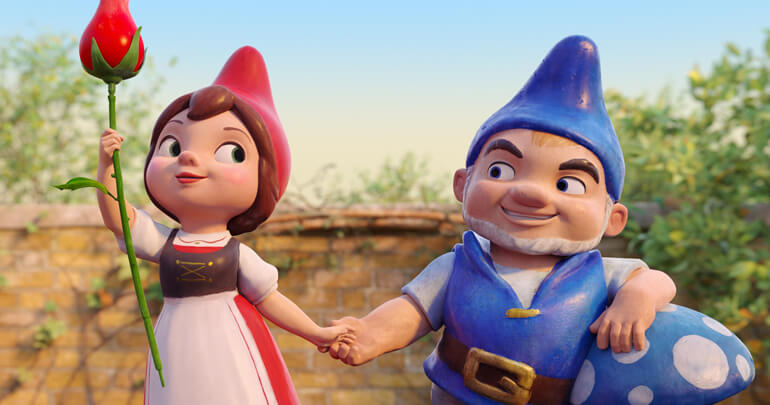

Gnomeu e Julieta são anões de jardim cujas famílias são vizinhas e rivais. Um dia eles se apaixonam, para desgosto dos familiares. Para ficarem juntos, eles precisam enfrentar diversos obstáculos.
Gnomeu e Julieta é um filme animado por computador, baseado na peça de William Shakespeare Romeu e Julieta. O filme foi dirigido por Kelly Asbury, diretor de Shrek 2 e Spirit: Stallion of the Cimarron. O filme foi lançado em 11 de fevereiro de 2011 nos Estados Unidos, em 4 de março de 2011 no Brasil e no dia 17 de março de 2011 em Portugal.